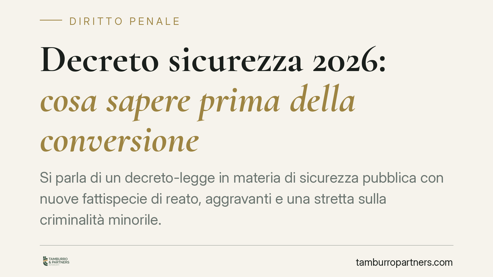

Decreto sicurezza 2026: cosa sapere prima della conversione
Si parla di un decreto-legge in materia di sicurezza pubblica con nuove fattispecie di reato, aggravanti e una stretta sulla criminalità minorile. Prima di trarre conclusioni operative occorre cautela: un decreto-legge è provvisorio e i suoi contenuti vanno riscontrati nel testo pubblicato. Vediamo cosa è ragionevole attendersi e cosa fare nel frattempo.

Premessa metodologica
I provvedimenti d'urgenza in materia penale arrivano spesso accompagnati da sintesi giornalistiche che anticipano numeri di articoli e contenuti non ancora stabilizzati. Su un tema così delicato preferiamo muoverci con prudenza: i riferimenti normativi vanno letti nel testo effettivamente pubblicato in Gazzetta Ufficiale e, soprattutto, verificati dopo l'eventuale conversione in legge. Finché questo passaggio non si compie, qualsiasi affermazione su nuove fattispecie o su specifiche numerazioni (ad esempio un presunto nuovo articolo del codice penale) resta un'ipotesi di lavoro, non un dato acquisito.
La natura provvisoria del decreto-legge
Il decreto-legge è uno strumento che il Governo adotta in casi straordinari di necessità e urgenza. La sua caratteristica essenziale è la provvisorietà: ai sensi dell'art. 77 della Costituzione, il decreto perde efficacia sin dall'inizio (cioè con effetto retroattivo, *ex tunc*) se non è convertito in legge dalle Camere entro sessanta giorni dalla pubblicazione.
Questo ha una conseguenza pratica di rilievo in ambito penale. Le nuove incriminazioni o gli inasprimenti di pena introdotti da un decreto non convertito cadono, e il quadro normativo torna quello precedente. Per questo è imprudente orientare condotte e strategie difensive solo sul testo del decreto, senza considerare l'esito del procedimento di conversione, durante il quale il contenuto può essere anche modificato in modo sostanziale.
La successione di leggi penali nel tempo
Qui si innesta un principio cardine. Per le norme penali sostanziali vale il divieto di retroattività della legge sfavorevole: nessuno può essere punito per un fatto che, al momento in cui è stato commesso, non costituiva reato, né può essere applicata una pena più grave di quella prevista all'epoca del fatto (art. 25, comma 2, Cost. e art. 2 c.p.).
In concreto: un reato di nuovo conio, o un'aggravante introdotta da un decreto, non si applica a condotte anteriori alla sua entrata in vigore. Diverso è il regime delle norme processuali, governate dal principio *tempus regit actum*: l'atto del processo è disciplinato dalla legge vigente nel momento in cui viene compiuto. Distinguere ciò che è sostanziale da ciò che è processuale è spesso decisivo per capire quale disciplina si applichi al proprio caso.
Un chiarimento utile, visto che in questi contesti si citano spesso reati contro l'ordine pubblico e i pubblici servizi: l'interruzione di un ufficio o servizio pubblico è disciplinata dall'art. 340 c.p., mentre l'art. 420 c.p. concerne l'attentato a impianti di pubblica utilità. Sono fattispecie distinte, e confonderle porta a valutazioni errate.
La giustizia minorile
Ogni intervento che incida sui minori va letto alla luce della specialità del processo penale minorile, orientato a una finalità educativa e al recupero, non meramente punitiva. Restano fermi, per i minori come per gli adulti, le garanzie difensive e il diritto al silenzio: l'indagato e l'imputato non sono tenuti a rendere dichiarazioni e dal silenzio non possono trarsi elementi a loro sfavore.
Eventuali inasprimenti sanzionatori o restrizioni delle misure alternative per i minori, se confermati, andranno valutati proprio nel bilanciamento con la priorità educativa che caratterizza questo settore. È un terreno in cui le generalizzazioni sono fuorvianti e serve l'esame del singolo caso.
Implicazioni pratiche
Per chi è coinvolto in un procedimento, per le famiglie di minori indagati e per gli operatori, il messaggio è duplice. Da un lato, non sottovalutare le novità: se entrano in vigore, producono effetti immediati sulle condotte successive. Dall'altro, non dare per definitivo un quadro ancora provvisorio. La verifica del testo vigente al momento del fatto resta il passaggio imprescindibile.
Cosa fare in concreto
- Verifica la fonte: controlla il testo pubblicato in Gazzetta Ufficiale e segui l'iter di conversione, perché i contenuti possono cambiare.
- Colloca il fatto nel tempo: individua la data della condotta e confrontala con l'entrata in vigore delle norme, per capire quale disciplina si applica.
- Distingui sostanziale da processuale: applica l'irretroattività alle norme incriminatrici e il *tempus regit actum* a quelle di rito.
- Tutela il diritto al silenzio: in caso di contatto con l'autorità, non rendere dichiarazioni senza prima aver consultato un difensore.
- Richiedi una valutazione individuale: soprattutto nei procedimenti a carico di minori, ogni situazione va esaminata nel merito.
Contributo informativo a cura di Tamburro & Partners - Avv. Giuseppe Tamburro. Non costituisce parere legale.
Ogni condominio ha una storia a sé.
Se gestisci un'amministrazione e vuoi un confronto su una specifica questione condominiale, scrivi allo studio. Ti rispondiamo entro un giorno lavorativo.